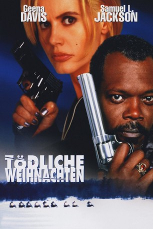

#1656 Tödliche Weihnachten
Alternativ: The Long Kiss Goodnight
 
 IMDB-Wertung: 6.8 / 10
IMDB-Wertung: 6.8 / 10  Metascore: 44
Metascore: 44 
Vor acht Jahren verlor Samantha ihr Gedächtnis. Als sie in einen Unfall verwickelt wird, flammen einzelne Teile ihrer Vergangenheit wieder auf. Mit Hilfe des eigenwilligen Privatdetektiv Hannessy will sie versuchen, ihre Identität ganz wiederzufinden. Die Gewißheit wird von Tag zu Tag stärker: sie war eine Agentin des CIA und spezialisiert auf Mordanschläge...
Jahr: 1996
Dauer: 121 Minuten
FSK: 16
Land: USA Studio: New Line CinemaTonspuren: DD5.1 - ,
Untertitel:
Auflösung: 1080p (1920x800) Größe: 7823 MB
Genre: Action, Thriller, Drama, Krimi, Mystery, Weihnachten
Regisseur:  Renny Harlin
Renny Harlin
Drehbuch: Shane Black
Soundtrack: Alan Silvestri
Darsteller:
Datei: X:\1996\Tödliche Weihnachten (1996, FSK16, 1920x800).mkv seit 31.07.2015
Festplatte: HD 1996-2002
 Es gibt insgesamt 78 Filme in der Gruppe '1996'
Es gibt insgesamt 78 Filme in der Gruppe '1996'